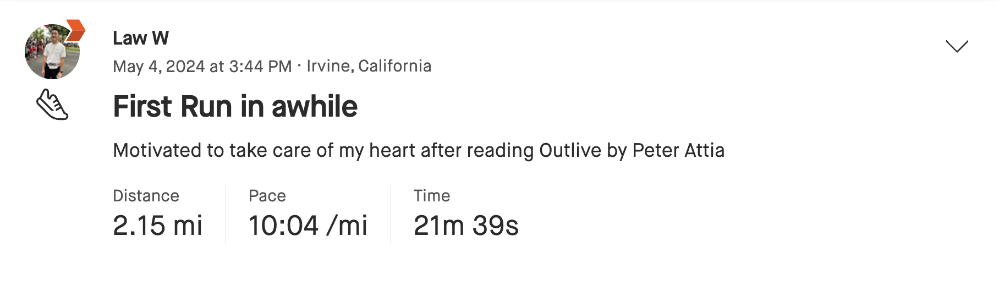
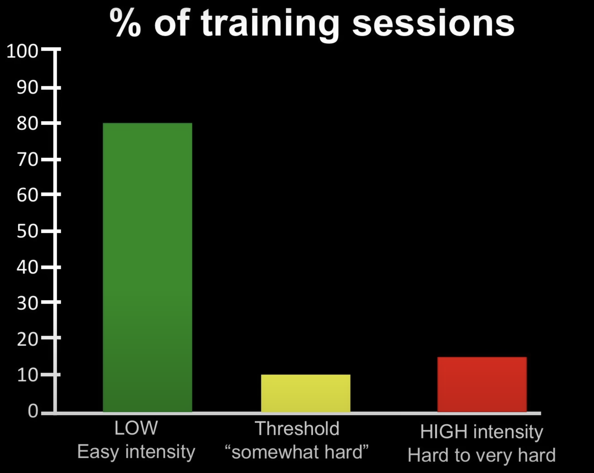

Running Lessons
I never considered myself a runner. I actually never enjoyed the activity of running. I usually didn’t look forward to it. I would occassionally still do it because I knew it was good for me. I also usually did enjoy how I felt afterwards, feeling like I put in some work, got my heart pumping and it was generally healthy. Over the past 5 months though, I’ve come to really enjoy running. I’ll share some of the things I’ve learned along the way about running and life.
Why I Started Running
On May 4th, I went for a 2 mile run. Little did I know that be the first run of many more runs over the next 5 months.

As noted in the image above, I was motivated to run after reading the book Outlive by Peter Attia. In his chapter on exercise, he talks about cardiovascular health and strength training as two key necessary things you need to do to stay healthy. That’s not anything I haven’t heard before. But what triggered something in me was this graph in the book. The metric plotted is VO2 max which measures how much oxygen your body can use during intense exercise.
One of the main arguments he makes in the book is if you want to do normal activities in your 60s, 70s, and 80s+, you need to train for that. Everyone’s VO2 max will decline over as they get older. However, the average person starts with a lower VO2 max than someone with above average fitness. And you need a certain amount of VO2 max (aka fitness) to do basic things like walk up hill, lift/carry heavy objects or run. I do want to do normal activities when God-willing my kids get older and I have grandchildren. I do want to be able to lift and carry my grandchildren and run after them. Imagining that future really did flip a switch in me where I became very motivated to take my health more seriously and so I went on that 2 mile run.
I chose running as my exercise of choice because I found it to be the best-bang-for-your-buck form of exercise. I could go out for a couple mile run and be done in 20-30 minutes. A 20-30 bike ride didn’t really feel like much exercise. I didn’t enjoy swimming. I also had to give up basketball because of injuries. Praise God I could still run so I wanted to take advantage of that.
Consistently Running
I slowly built up mileage over the coming weeks, 5 miles that first week to eventually 10 per week and then 15. You can see how infrequently I ran in the proceeding months. There are some sparse weeks there!
In late June, I decided to sign up for a 10k race because a friend told me about one. A couple friends and I signed up for it (thanks for running with me Andy & Shannon!). I thought running a race would be a good experience. And it was! There was a lot of adrenaline from the crowd and my kids even got to run the 1 mile “race” which they were excited about. I set a PR of 58:00 at this 10k (9:20 mins/mile).
During this time, I knew some of my friends were already planning on doing the Long Beach Half-Marathon in October. When they were talking about a few months back, my thought was “No way.” But after running more consistently, I was on the fence in June. I said I was 50/50 in our group chat. The day after running the 10k, I went for it and signed up for the half.
I started Nike Run Club’s 14 week half-marathon plan since the timing was perfect and I had heard good things about their Guided Runs. Well, fast forward 5 months and on Oct 6, I ran the Long Beach Half-Marathon in 1:49:15 (8:20 mins/mile). It was a joy doing this with some brothers and sisters from church and seeing a bunch of friends trying to get healthier and make fitness a regular part of their lives.
People had recommended setting 3 goals: a bare minimum goal, a reachable goal and a stretch goal. So I did.
Bare Minimum Goal: Don’t get hurt
Reachable Goal: Finish the race
Stretch Goal: Sub 2 hours
After training for something for 3+ months and meeting my stretch goal, it’s hard to explain how happy I was crossing this finish line.
Seeing my wife and kids at the finish line cheering me on was so awesome!
I also downloaded some of the GPX data from Strava for some of my friends and I and animated it using GPX Animator.
Things I’ve Learned about Running
Types of Runs
Easy Running: Most runs should be “easy.” And by most, this is 80% of your total miles! Coming from basketball I was used to running fast, quick bursts. So when I would go for “runs” I would be going at a moderate to fast pace. I would quickly tire because my aerobic fitness was not very good and it just wouldn’t be pleasant. Reading a little about running and other endurance spots, you quickly learn a common recommendation “run easy” and “run at a conversational pace” and “run in Zone 2” to build your “aerobic base.” I didn’t fully understand what all of this meant yet but I just took their advice and started running easy. It did feel abnormally slow because I wasn’t used it. One of the main benefits is you can run for longer at this slower pace, it’s more enjoyable and it’s scientifically proven to train your mitochondria (I think?). Stephen Seiler has a TED talk where he explains the above idea in about 15 minutes. One of the slides shows the percentage of time spent in different training zones. You can see even for professional athletes, they spend 80% of their time in this “Low/Easy Intensity” area.

The other 20% of the running should be speed work. I used the Nike Run Club (NRC) app’s half-marathon training plan. Every week there were two recovery runs (1 15 minute run basically introducing the runs that week, another longer recovery run), two speed runs and 1 long run. The speed runs varied from intervals, tempo, to fartleks. I got to learn what all of these different runs were. The NRC app was particularly helpful for these runs because it guides you - when to start and stop a given interval and what type of effort to give at each interval (4-5 easy warmup, 6 for a 10k pace, 7-8 for a 5k pace, 8-9 for a mile pace and 10 for all out of ‘celebration’ pace).
You run out of energy at around 90 minutes. I remember one of my first long runs (Strava link) where I went past 60 minutes, I didn’t have any water or nutrition on me. It felt really terrible at around 80 minutes. I think my heart rate even peaked.
Gear
Shoes:
- First pair with Brooks Ghost. I got Ghost 15s but only Ghost 16s are available now. My friend sent me this comic that was pretty accurate why I picked them:
Second pair was a Asics Novablast 4.
I also started a 6 month membership to Road Runner Sports for $1.99. This allows you to buy shoes, run with them and return them if you do not like them. I wound up doing this a couple times for shoes that felt okay in store but for various reasons I didn’t like when going on an actual run. Not sure I’ll keep this membership after the trial though.
Shorts:
Northyard 5-inch shorts - Bought a few of the cheapest / well-reviewed shorts on Amazon.
BALEAF Running Shirt - Similar search, bought a few.
Running Belt:
- Spibelt - Running belt to hold phone, keys.
Hydration Vest:
- Salomon ADV Skin 12 - For longer runs, this vest was very useful to carry water, gels, phone. I got a medium.
Nutrition:
Huma Chia Energy Gels - For longer runs, I ate these. I haven’t tried other gels yet but I liked how these tasted and just stuck with them.
BODYARMOR Flash IV Electrolyte - Also for longer runs. This is a 6 pack from Amazon ($1/pack) which is honestly a little egregious for salt. In theory you can make your own. I bought this 30 pack from Costco that was a little cheaper.
GPS Watch: Apple Watch - I already had an Apple Watch so I just used it to track my runs using the native Fitness App.
- When starting an activity, there’s usually a count down, you can double tap to start it immediately
- When running, you can double tap the screen to start a new segment. This is useful when you are doing interval runs.
iOS Apps:
- Fitness: Apple’s native fitness app. Can see detailed information on your workout. This gets really granular because GPS watches these days measure cadence, stride length and vertical oscillation.
- Health: Seeing heart health data like Cardio Fitness (VO2 Max) and resting heart rate trend in better directions was so motivating!
- HealthFit: I used this to import all of my previous Apple Fitness data into Strava
- WorkOutDoors: More customizable fitness app. For example you can configure interval runs, total times for each interval, target paces for each interval and the app will warn you when you are outside of your target pace (too fast and too slow). This app makes your Apple Watch behave more like a Garmin.
- Strava: Fun and somewhat motivating to see how friends are staying active. Being a sucker for data, I enjoy seeing Strava’s global heatmaps by activity type and also the user created segments and receiving random rewards like “You set your best 2nd mile time!” Side note: I find it pretty amazing that Strava has built a business on monetizing fitness data that users are giving them.
These are the Strava weekly heatmaps. It’s cool thinking about all the people that went running and/or biking the last week to make this heatmap.
Racing
- Race strategy: Treat the first 75% of the race like a “warmup” for the last 25% of the race. Once you get to the last quarter, you can see how much you have left in the tank.
- It’s must harder to go from the beginning of a training block to the starting line of a race than going from the starting line of a race to the finish line. So many things can go wrong over a 14-16 week training block, you can get sick, injured, or your kids can get sick. All kinds of things can come up.
Things I’ve Learned in General and about Myself
- People Can Change: Running a marathon (or half) was never on my bucket list. I never thought I could even run this distance let alone do it and enjoy it and enjoy the whole training process. I grew up playing basketball which requires a totally different set of muscles. You need short bursts and fast twitch muscles. I still have yet to meet a basketball player who likes long distance running.
- The human body has an amazing ability to be trained
- Running regularly has given more time to think, pray and listen to audiobooks. It’s also given me more energy throughout the day.
- The running community is generally positive. Nowadays it’s pretty easy to form groups around a share interest. I’ve found the running communities to be quite encouraging. It doesn’t matter what pace you are running.
Things I’ve Learned about Christian Life
The Bible uses many running illustrations that have become more vivid as I’ve started running more consistently:
- Do you not know that in a race all the runners run, but only one receives the prize? So run that you may obtain it. Every athlete exercises self-control in all things. They do it to receive a perishable wreath, but we an imperishable. So I do not run aimlessly; I do not box as one beating the air. But I discipline my body and keep it under control, lest after preaching to others I myself should be disqualified. (1 Corinthians 9:24-27)
- I have fought the good fight, I have finished the race, I have kept the faith. (2 Timothy 4:7)
- Therefore, since we are surrounded by so great a cloud of witnesses, let us also lay aside every weight, and sin which clings so closely, and let us run with endurance the race that is set before us, looking to Jesus, the founder and perfecter of our faith, who for the joy that was set before him endured the cross, despising the shame, and is seated at the right hand of the throne of God. (Hebrews 12:1-2)
From 1 Corinthians 9:24-27, we draw some parallels between physical running and spiritual running (basically Christian life):
| Aspect | Physical Running | Spiritual Running |
|---|---|---|
| Purpose | To win a perishable prize (e.g., a medal, wreath) | To receive an imperishable prize (eternal life, spiritual reward, crown of glory, commendation from God) |
| Training | Requires self-control and discipline in physical training | Requires self-control and discipline in spiritual growth and character |
| Goal | To finish the race and win, physical fitness and health | To live life of praise and glorifying God, aiming for eternal rewards |
| Focus | Winning the race, obtaining a temporary prize | Living with purpose, avoiding aimlessness, and striving for spiritual growth |
| Effort | Demands physical discipline and perseverance | Demands spiritual discipline, avoiding complacency, and personal holiness |
| Motivation | Earthly recognition and achievement | Eternal recognition and spiritual fulfillment |
| Outcome | A perishable, temporary reward | An imperishable, everlasting reward |
| Consequence of Failure | Losing the race, disqualification | Spiritual disqualification, falling short of spiritual goals |
- Don’t compare yourself to others: I’ve also seen how easy it is to compare yourself to others in running and in Christian life. It’s easy to compare your pace or weekly mileage to others and say, “I wish I ran that fast.” But everyone is different. Everyone has had differing amounts of training up to that point. Everyone’s body is different. People have different goals. I’ve found it’s better to just be inspired by what others are able to do. Then if you want to compare, compare with your previous self. How long was I able to run at a conversational pace 1 month ago? 3 months ago? In Christian life it’s also easy to compare how fast/well one is running and compare yourself to others. But similarly, everyone is on a different spiritual journey with differing spiritual backgrounds. If you want to compare, compare with your previous self. How much have I grown in things like the fruit of the Spirit since I became a Christian? How much have I grown in love of God and people?
- Self-control is so important: 1 Cor 9:25 says, “Every athlete exercises self-control in all things.” Athletes exercise self-control because it’s necessary to have good performance. Even in building a simple habit of running for 30 minutes a day, this requires self-control and discipline to find the time to do so, sleeping early to wake up early to do this (if you want to do it in the morning before your kids wake up), committing to a running plan, actually running the runs on those plans, etc. In Christian life, growing in self-control over my desires means I can better fight temptation and sinful desires and ultimately be a better instrument for noble purposes, useful to God for any good work (2 Tim 2:21).
- Don’t run aimlessly: It’s been helpful to have goals while running. Following the NRC running plan was helpful. Knowing what runs I was going to do on each day was helpful. Knowing the purpose of each run and what it was doing to my body was motivating as well. There were times I didn’t have a good idea of how far I was going to run that day. Sometimes on those days I wound up cutting my runs short because of the lack of motivation. In Christian life, it’s important to have spiritual direction. Where is God leading you? And if you have a family and especially if you are a husband, how and where are you leading your family?
- Disciplining the body: Running has helped me discipline my body. Starting off the day with something physically demanding helps set the tone for the rest of the day. Another example is running provides an outlet for me to think and pray. This helps to get my mind settled for the day ahead as well.
1 Tim 4:8 says, “for while bodily training is of some value, godliness is of value in every way, as it holds promise for the present life and also for the life to come.” The Bible says bodily training is of some value! This should provide some motivation to a Christian to take exercise seriously. However the passage goes onto say that godliness is more important because it holds promise for this life and the life to come. I take this to mean our spiritual fitness and our relationship with Christ is more important to God than our physical fitness. There were times on this running journey I took running too seriously and prioritized it above the things God wanted me to prioritize like my family. So one big takeaway has been to not allow good things (like running) to supercede the best things (honoring and glorifying God).
Why I plan to continue to run
I started out on this running journey because I wanted to reach my 70s and 80s healthy enough to be able to do normal activities that I take for granted like walk up hill or God-willing hold my grandkids. It started with a simple 2 mile run. It’s turned into a habit now that I really enjoy where I try to run 20-30 miles a week.
Along the way I’ve learned so much about running, myself and even Christian life. Given I’ve also had 3 major leg injuries, I thank God he’s allowed me to run these hundreds of miles these last 5 months. I’m excited to see where running takes me next.